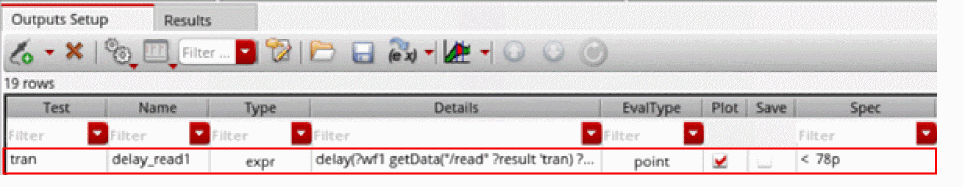
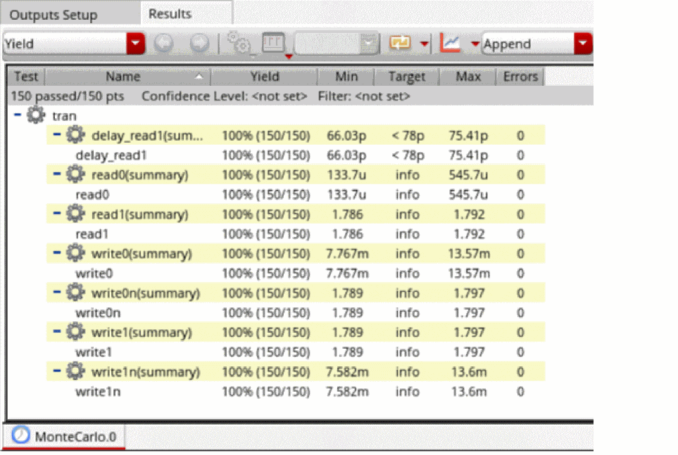
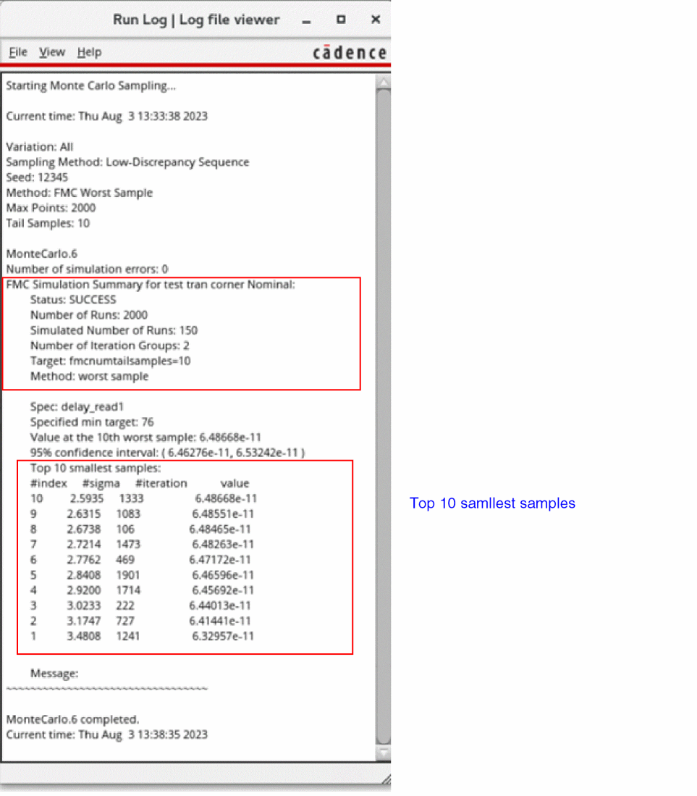
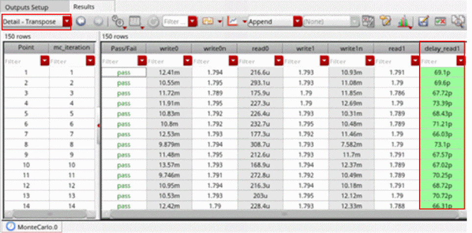
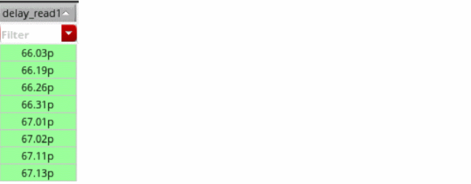

Running the Fast Monte Carlo Method
- Open your design in ADE Assembler.
-
In the Outputs Setup tab of ADE Assembler, define at least one specification.
In the following example, the outputdelay_read1has a specification.
 - From the Run Mode drop-down list, select Monte Carlo Sampling.
-
Click the Simulation Options command.
The Monte Carlo form opens. - From the Method drop-down list, select FMC Worst Samples.
-
Specify any two of the following fields:
-
In the Total Samples field, specify the maximum number of points to be simulated.
The default value is400. -
In the Target Yield filed, specify the yield value that you want to achieve for your design. For example,
3Sigma. -
In the Tail Samples field, specify the number of tail samples. For example,
10.
-
In the Total Samples field, specify the maximum number of points to be simulated.
-
In the Budget field, specify the number of simulations to be run for FMC method. For example, if you set this field to
500, no more than500points are simulated for FMC Worst Sample method. This is an optional field. -
In the Initial Points field, specify the number of initial points based on which metrics, such as mean and standard deviations, are calculated and annotated in histograms. Specifying a higher number of initial points improves the accuracy of mean and standard deviation measurements.
In FMC Worst Sample method, an initial model is built after the initial sampling group finishes. The initial model can be built with additional data points by increasing the number of initial points. - Select the Save Waveform (Simulation Data) check box to save the waveform data so that it can be used later for post-processing.
- Click OK to close the Monte Carlo form.
-
In the Run toolbar of ADE Assembler, click Run Simulation to run the FMC method.
The results are displayed in the Results tab, as shown in the following figure.
The number of passed points and total number of points are reported. Note that the yield estimate is not reported in the results. Metrics, such as Mean, Std Dev, that are normally reported for a standard Monte Carlo run are also omitted from the Yield results view. -
From the toolbar of the Results tab, click Open Run Log to open the run log.
This FMC run identified the top worst samples out of2000total points, but only150sample points were actually simulated. - In the Results tab, from the Select the results view drop-down list, select the Detail –Transpose view.
-
In the toolbar of the Results tab, click Configure what is shown in the table and deselect Signals.
The results are displayed in the Detail – Transpose view as follows.
 -
Click the header of the output specification column to sort the values in the ascending order.
The values in the column are sorted,

Related Topics
Workflow of Fast Monte Carlo Method
Return to top